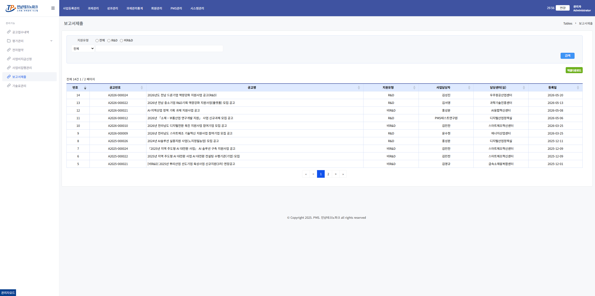
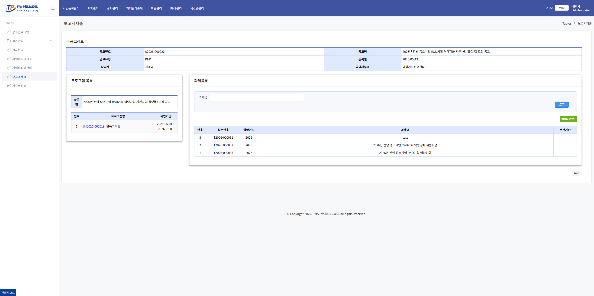
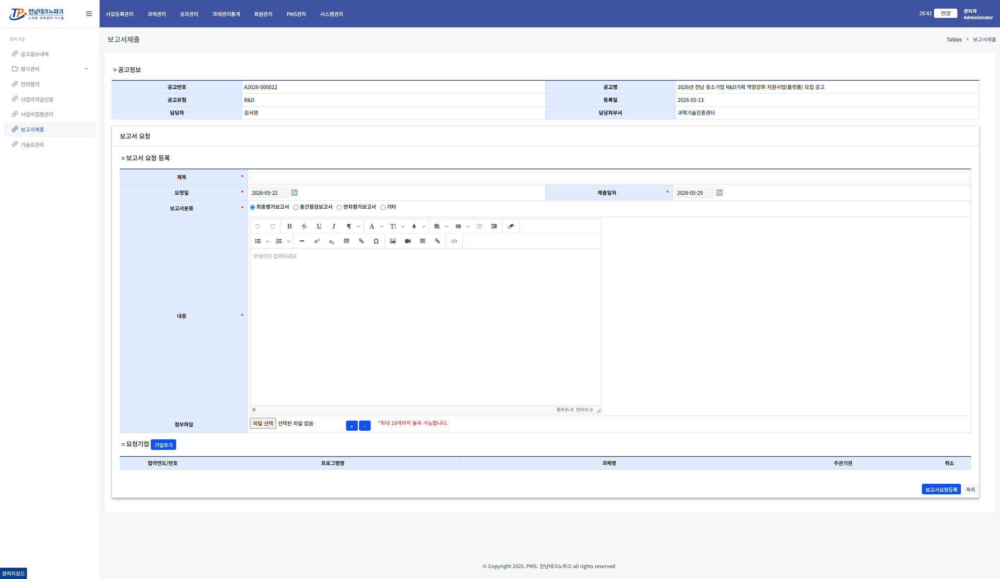
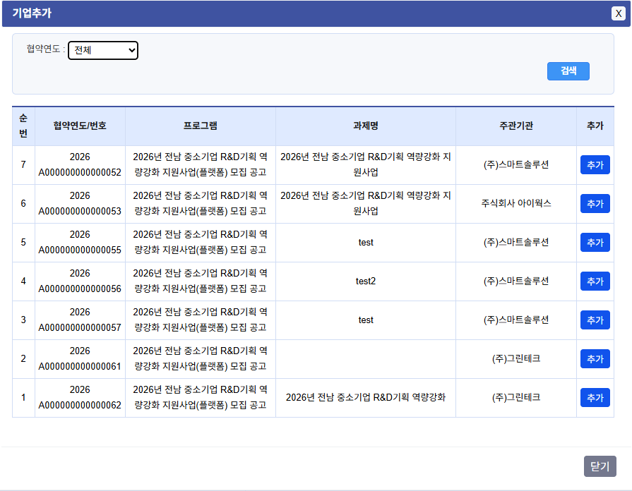

보고서 제출 요청 관리자
1. 보고서 제출 공고 목록 진입
왼쪽 메뉴 「과제관리」 → 「보고서제출」 클릭 → 해당 공고 행 클릭

2. 프로그램 / 과제 목록 확인
보고서 제출 대상 프로그램 및 과제 목록을 확인하고 해당 과제 행을 클릭합니다.

3. 보고서 요청 목록 확인
기존 보고서 요청 현황을 확인하고 신규 요청을 등록하려면 「요청 등록」 버튼 클릭

4. 보고서 요청 등록
보고서 종류·제출기한 등 요청 정보를 입력하고 「요청기업 추가」 버튼 클릭

5. 요청기업 추가
팝업에서 보고서 제출을 요청할 기업을 선택하고 「확인」 클릭 → 전체 입력 완료 후 「저장」 클릭

💡 안내
요청 저장 완료 후 해당 기업 담당자에게 보고서 제출 요청이 발송됩니다.